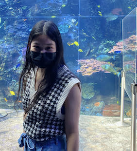

Isabella Piboolnuruk
I am currently a second-year student at Georgia Institute of Technology, majoring in Computational Media, with a concentration in People and Interaction, and I am from Tampa, Florida
I am currently a second-year student at Georgia Institute of Technology, majoring in Computational Media, with a concentration in People and Interaction, and I am from Tampa, Florida